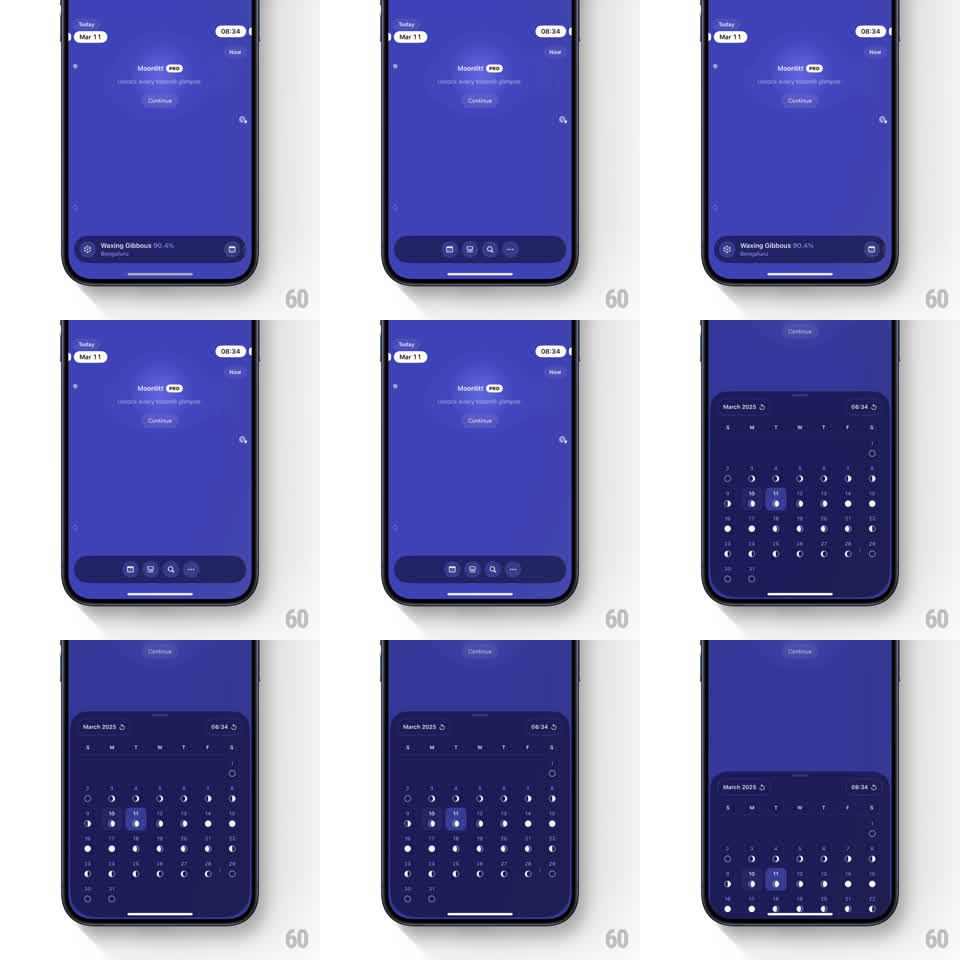

Media
Frame-by-frame

Rebuild this interaction 1:1: Moonlitt's morphing bottom bar - swiping the floating bar flips it between a moon-phase status pill and an icon action bar, and tapping it expands a full calendar sheet with moon-phase day markers.

Rebuild this interaction 1:1: Moonlitt's morphing bottom bar - swiping the floating bar flips it between a moon-phase status pill and an icon action bar, and tapping it expands a full calendar sheet with moon-phase day markers.
## Integration
Integration: stack-agnostic spec - springs given as stiffness/damping, timed motions as duration + curve; map every value to your framework and animation library of choice.
## Scene
Purple app screen ("Moonlitt PRO", "unlock every moonlit moment", date and time pills "Today Mar 11" / "08:34", Continue). The floating bottom bar has two faces: a status pill (gear icon, "Waxing Gibbous 90.4%", "Bengaluru", calendar glyph) and a 4-icon action bar (calendar, photo, search, more). Tapping expands a calendar sheet: "March 2025", weekday header, day cells with moon-phase glyphs (11 highlighted), time pill, and a right-edge hour scrubber.
## Motion spec
Pattern: swipe-morphing floating bar with sheet expansion.
- Horizontal swipe on the bar: it compresses toward the swipe direction (scaleX 0.9) then morphs - contents crossfade (200ms) while the pill's width springs between faces (status width <-> icon-bar width, spring ~340/20); a haptic-style tick at the flip point.
- The flip can be flicked (velocity > 500pt/s completes the morph) or dragged past 40% and released.
- Tap the bar: it expands into the calendar sheet - the bar's rounded rect grows upward and sideways (spring ~300/22, 350ms), the bar contents fading out as the calendar grid staggers in (week rows top-down, 30ms per row).
- The selected day cell highlights (filled circle, scale pop 0.8 -> 1, 200ms); dragging the right-edge scrubber ticks the hour pill live and slides a marker line.
- Drag the sheet's grabber down: it collapses back into the floating bar (reverse morph, spring ~300/22).
## Calibration
- The bar's two faces share exactly one container - morph, never swap.
- Calendar moon glyphs are per-day phase icons; the selected day keeps both the glyph and the highlight ring.
## Reduced motion
Bar faces crossfade; the sheet fades in over the bar (250ms).
## Don't miss
- The floating bar stays clear of the home indicator (12pt gap) in all states.
- Date and time pills at the top mirror the sheet's selection live while scrubbing.